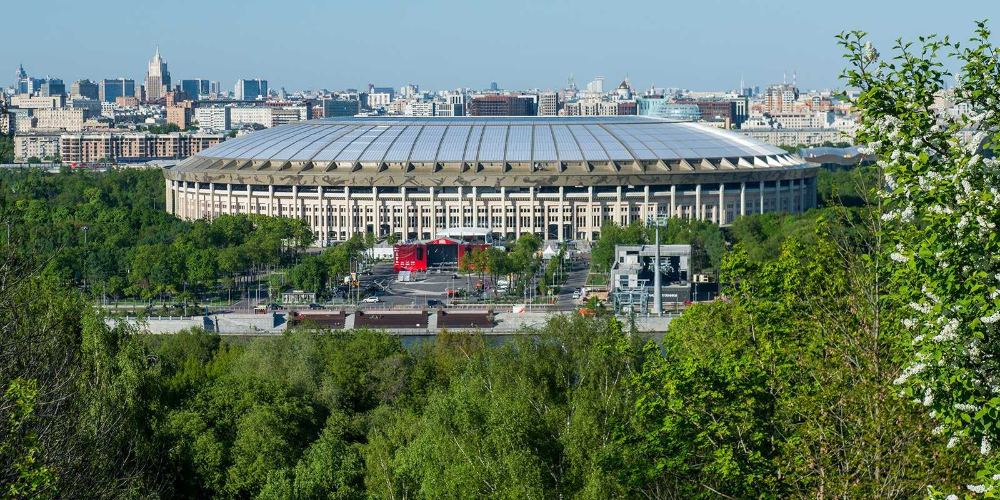
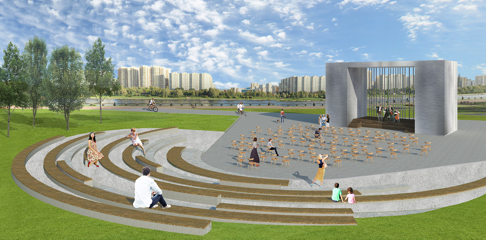

Сканди-мероприятия
-

Царственные жёны на Измайловском острове
30 марта 2024г 9:30
Приглашаем 30 марта в 9:30 на SCANDI-прогулку в Измайлово, после которой мы посетим с экскурсией выставку, посвященную царственным обитательницам Измайловского острова.
Измайлово – удивительное место. Начнем с того, что это бывшая загородная резиденция русских царей, расположенная на единственном в Москве рукотворном острове, который появился здесь по приказу царя Алексея Михайловича. Именно он повелел выкопать в пойме реки Серебрянки два пруда Серебряный и Виноградный, вследствие чего, и возник рукотворный остров, ставший центром крупнейшего экспериментального хозяйства своего времени. Здесь Петр I нашел старый ботик «Святой Николай», ставший «дедушкой русского флота», а увлечение юного императора мореплаванием привело к созданию военно-морского флота России.
Царскую загородную усадьбу на Измайловском острове в XVII–XVIII веках активно посещали российские правители и члены их семей. В этой резиденции отдыхали многие известные женщины того времени: царица Наталья Кирилловна Нарышкина — мать Петра Первого, его сестра Софья, известная своими политическими амбициями. Здесь прошло детство будущей императрицы Анны Иоанновны; в измайловских угодьях любила охотиться государыня Елизавета Петровна. И это далеко не полный список правительниц, посещавших подмосковную резиденцию, которую можно было сравнить с райским садом.
Во время экскурсии мы узнаем историю измайловской усадьбы, услышит рассказ о быте российских цариц и императриц, их привычках, любимых занятиях во время отдыха, а также о системе обучения и воспитания царевен. Особое внимание будет уделено женским нарядам той эпохи, которые претерпели кардинальные изменения в результате реформ Петра Великого.
Перед экскурсией хорошенько позанимаемся, пройдем около 8 км по лесопарковой территории, надышимся чистым воздухом, затем пообедаем. А потом желающие смогут ещё выпить ароматный кофе в небольшой кофейне. И вот, уже потом отправимся на экскурсию.
Встречаемся в 9:30 на станции МЦК «Соколиная гора».
Протяженность маршрута: ок.9 км (легкий, без перепада высот)
Продолжительность: 6 ч
Программа закончится в 15 ч в усадьбе Измайлово.
Инструктор: Краснова Елена
В оплату программы включена экскурсионно-спортивная программа. Предоплата необходима для приобретения билетов в музей и на экскурсию. Обед оплачивается самостоятельно.
Подробная информация о времени и месте встречи после регистрации в группе в Телеграмм
Стоимость:
2000р - взрослые
1900р - пенсионеры
Предоплата: 500 р
ЗаписатьсяПодробнее -
SCANDI-поход по «Зелёному кольцу Москвы». Часть 1
31 марта 2024г 10:00
Зелёное кольцо Москвы - это пешеходный маршрут протяжённостью 160 километров, который проходит по паркам и зелёным зонам с минимальными переходами по городским улицам и опоясывает таким образом Москву.
На пути встречается множество достопримечательностей — есть возможность увидеть не просто зеленые парки, но и самые красивые виды города, исторические места и много интересных и неизвестных памятников столицы.
Маршрут подходит как для семейных прогулок, так и для тренировок спортсменов в беге, маунтинбайке, скандинавской ходьбе. Зимой — для занятий лыжами. Автор маршрута Александр Советов.
На этом этапе пройдём участок м.Царицыно - м.Братиславская
✅Увидим парки:
• Царицыно
• Борисовские пруды
• Братеевский каскадный парк
• парк 850-летия Москвы
Участок протяжённостью около 13 км
✅Нас ждёт :
• Сканди-разминка
• Дыхательная гимнастика
• Поход с наслаждением и любовью
• Дружеские кофе/чайные паузы
• Растяжка в конце маршрута
Длительность около 4,5 часов
📍Одежда и обувь спортивная по погоде.
📍Скандинавские палки берем с собой и улыбку тоже.
📍Термосы с чаем и перекусы приветствуются.
Инструктор Волосюк Маргарита
Стоимость: 1000р
ЗаписатьсяПодробнее -

SCANDI-путешествие по выставке «Россия». Часть 2
6 апреля 2024г 10:00
Продолжаем планомерное изучение выставки Россия. В этот раз наши планы даже более интересные, чем в предыдущий визит. В субботу, 6 апреля 2024 года, мы встречаемся утром и сразу отправляемся в 75 павильон.
Наша цель - путешествие по залу "А", где представлены достижения регионов Центральной России, Кавказа и Поволжья. Огромный павильон вмещает в себя все субъекты нашей страны. Мы сможем услышать народные песни, попробовать блюда региональной кухни, поучаствовать в работе атомной станции или создать свой собственный чай.
В павильоне "Е" мы познакомимся с новостями РЖД и последними разработками Яндекса, совершим путешествие на машине времени из 1990-х в наши дни и снимем видео через набирающие популярность нейросети.
В город пришла весна, мы можем сполна насладиться красотой Москвы, солнцем и теплом… Но вот уже слышен рев моторов и сигналы клаксонов – мы приближаемся к музею «Гараж особого назначения ФСО России», где попытаемся разгадать секреты организации, отвечающей за охрану и передвижение первых лиц государства. В экспозиции представлено более 50 единиц уникальной автомобильной и мотоциклетной техники. Вместе с экскурсоводом посетим гараж Николая II, увидим автомобили, обслуживавшие руководителей СССР и современной России и мотоциклы Почетного эскорта.
В общем, изучаем огромную выставку Россия без спешки и суеты.
У нас припасено ещё одно путешествие на выставку: в мае 2024-го года мы идём смотреть на музыкальные фонтаны, а также обязательно подробно изучим экспозицию павильона АТОМ.
Продолжительность экскурсии - примерно 4 часа, сопровождает наш гид Дмитрий Лесных.
После экскурсии - остановка на обед в каком-нибудь кафе на территории выставки. А со всеми, кто не устал, продолжим сканди-прогулку по Ботаническому саду.
Форма одежды – спортивная, по погоде.
Группа до 10 человек.
В стоимость входит всё спортивно-экскурсионное сопровождение и использование радиогида.
Стоимость: 2400р
ЗаписатьсяПодробнее -

ТРЕНИРОВКА ПО СКАНДИНАВСКОЙ ХОДЬБЕ В ЛУЖНИКАХ + ПОСЕЩЕНИЕ БАССЕЙНА (по желанию).
7 апреля 2024г 10:00
Весна – прекрасное время для занятий спортом на открытом воздухе. Активная и безопасная тренировка с видом на Воробьевы горы и извилистое русло Москва-реки не только придаст бодрости, но и зарядит позитивными эмоциями.
Встречаемся в 9.45 у выхода №3 станции метро «Воробьевы горы».
Что ждёт на тренировке:
• Активная разминка;
• Отработка техники скандинавского шага;
• Тренировка в outdoor формате с резинками и использованием уличных площадок;
• Растяжка.
Продолжительность основной тренировки 1,5 - 2 часа.
Потом все желающие идут в аквакомплекс "Лужники". Пьем кофе/чай в Aквакафе и мило общаемся. После - посещение бассейна (1 час бассейн + 1 час термы).
Стоимость посещения бассейна:
50 м - 850 р за 2 часа.
25 м - 650 р за 2 часа.
Посещение бассейна оплачивается самостоятельно в Аквакомплексе.
ВНИМАНИЕ! В бассейне наши тренера не имеют право проводить тренировки, мы самостоятельно плаваем и наслаждаемся отдыхом.
Медицинская справка для посещения бассейна не нужна.
Форма одежды – спортивная, по погоде.
Новичкам готовы предоставить палки в аренду (стоимость 100р). Об этом нужно сообщить при записи.
Стоимость: 1000р
ЗаписатьсяПодробнее -

SCANDI-поход плюс тренировка по «Зеленому кольцу Москвы». Часть 2.
13 апреля 2024г 10:00
Зелёное кольцо Москвы - это пешеходный маршрут протяжённостью 160 километров, который проходит по паркам и зелёным зонам с минимальными переходами по городским улицам и опоясывает таким образом Москву.
На пути встречается множество достопримечательностей: есть возможность увидеть не просто зеленые парки, но и самые красивые виды города, исторические места и много интересных и неизвестных памятников столицы.
Маршрут подходит как для семейных прогулок, так и для тренировок спортсменов в беге, маунтинбайке, скандинавской ходьбе. Зимой — для занятий лыжами.
Автор маршрута Александр Советов.
На этом этапе пройдём участок м.Братиславская- м.Юго-восточная.
Участок протяжённостью около 15 км.
✅Увидим парки:
• парк 850-летия Москвы;
• Кузьминский лес;
• тропу Сказок и усадьбу Деда Мороза;
✅Нас ждёт :
• Сканди-разминка;
• Дыхательная гимнастика;
• Поход с наслаждением и любовью;
• Дружеские кофе/чайные паузы;
• Растяжка в конце маршрута.
Длительность около 4,5 часов.
📍Одежда и обувь спортивная по погоде.
📍Скандинавские палки берем с собой и улыбку тоже.
📍Термосы с чаем и перекусы приветствуются.
Втречаемся у метро Братиславская в 9.45 (точное место встречи будет в организационном чате).
Инструктор Волосюк Маргарита.
Стоимость: 1000р
ЗаписатьсяПодробнее -

АВТОБУСНО-ПЕШЕХОДНОЕ ПУТЕШЕСТВИЕ «ВОЛШЕБНЫЙ БОРОВСК»
20 апреля 2024г 10:00
Однодневное путешествие в небольшой купеческий городок Боровск, раскинувшийся по обоим берегам реки Протвы.
Боровск, основанный в XV веке, славится своими древними старообрядческими храмами, памятниками архитектуры и уникальной атмосферой старинного русского города, наполненного перезвоном колоколов. Здесь можно насладиться природными красотами в окрестностях Боровска, окруженного живописными холмами и сосновыми борами, давшим название городу.
• Мы побываем в селе Рябушки - исторической родине семьи Рябушинских;
• По возможности, поднимемся на колокольню Пафнутьево-Боровского монастыря;
• Узрим памятник "неистовому протопопу" Аввакуму и посетим старообрядческий храм начала XX
века;
• Погуляем по торговым рядам и улочкам с купеческими особняками;
• Увидим место заточения Феодосии Морозовой, храм, где венчался К. Э. Циолковский и самую старую деревянную церковь Калужской области;
• Отыщем граффити художника Владимира Овчинникова, прославившего город;
• Насладимся прекрасными видами Боровска с 3-ёх смотровых площадок и получим хорошее настроение.
Встречаемся в 8:00 у метро «Саларьево» (точное место встречи будет опубликовано в организационном чате).
Отправление от точки сбора около 8:30. Путешествуем на минивэне маленькой дружной группой в сопровождении гида Василия Злотникова.
Во время путешествия совершим остановку на обед в 14:00 кафе «Чайная» в Боровске (комплексный обед входит в стоимость).
Ориентировочное время возвращение к станции метро «Саларьево» 19:00. Василий очень интересный и увлекающийся гид, потому мы не можем гарантировать точное время возвращения. Группа - 6 человек. Одежда обычная, городская, согласно погоде; палки с собой не берем.
В стоимость входит весь трансфер, экскурсионное обслуживание, комплексный обед в кафе «Чайная».
В стоимость НЕ входит: дорога до точки сбора, входные билеты в музеи.
Гид – Василий Злотников.
Организатор - Маргарита Волосюк.
Стоимость: 7500р
ЗаписатьсяПодробнее